AniRevo Artist Alley System: Should there be change?
Author
Naphyla
Why was this created?
The original survey was created to better understand how artists feel about the current format of artist alley participant selection. It has become increasingly difficult to be able to table at AniRevo, especially for local and new artists, under a first come first serve (FCFS) model.
Note: Neither the survey nor the analysis is affiliated with AniRevo in any way. This form is made by an artist to try and understand artists’ needs
Respondant Demographics
The majority of respondents reside within the greater Vancouver area.
Show Code
df |>mutate(`What geographical region do you live in?`=fct_relevel(`What geographical region do you live in?`,c("Another Canadian province","Outside of the Greater Vancouver Area but within BC","Greater Vancouver Area"))) |>bar_graph(`What geographical region do you live in?`, "Set3")
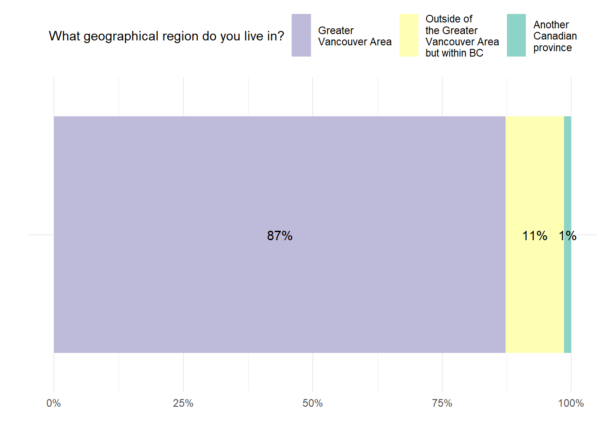
Past Attendance
About half of respondants have not tabled at AniRevo or not able to in the past.
Show Code
df |>bar_graph(`Have you ever attended AniRevo as an artist in the past?`, "Pastel1")
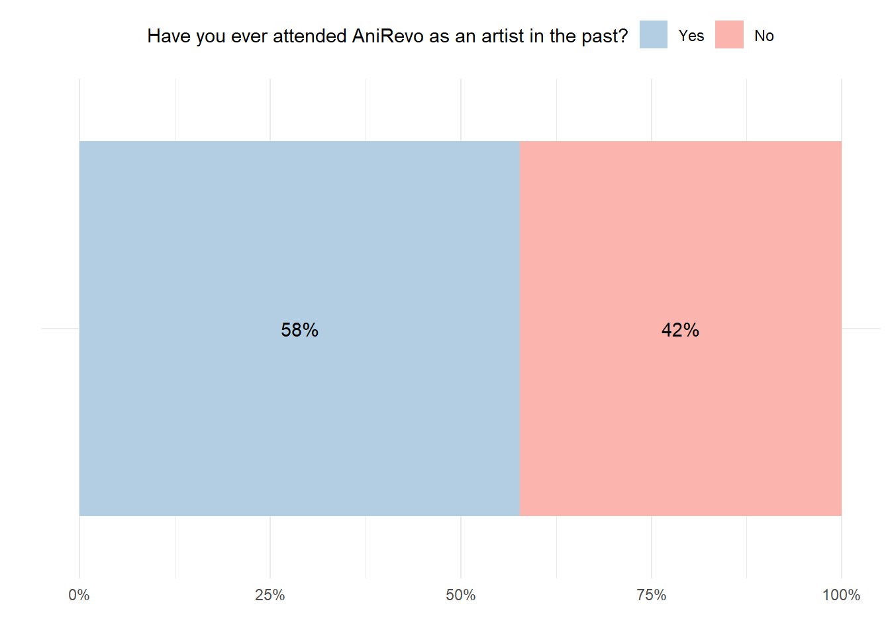
For those who did table before, about half of them tabled last year.
Show Code
df |>group_by(year_since_attandence) |>summarise(`Number of respondants`=n()) |>rename(`How many years has it been since you last tabled at AniRevo?`= year_since_attandence) |>ungroup() |>mutate(`%`=round(`Number of respondants`/sum(`Number of respondants`) *100, 2)) |>flextable() |>colformat_double(na_str ="NA", nan_str ="NaN") |>autofit()
How many years has it been since you last tabled at AniRevo?
Number of respondants
%
1.0
31
43.7
2.0
5
7.0
6.0
3
4.2
9.0
1
1.4
NA
31
43.7
Note:NA means that the respondant has never tabled at AniRevo in the past.
Overall, we can see that roughly half of the respondents were able to secure a table for 2025 either through the drop or from rebooking.
Show Code
df |>bar_graph(`Were you able to successfully purchase a booth during the most recent drop?`, "Set3") +labs(fill ="Were you able to successfully purchase\na booth during the most recent drop?")
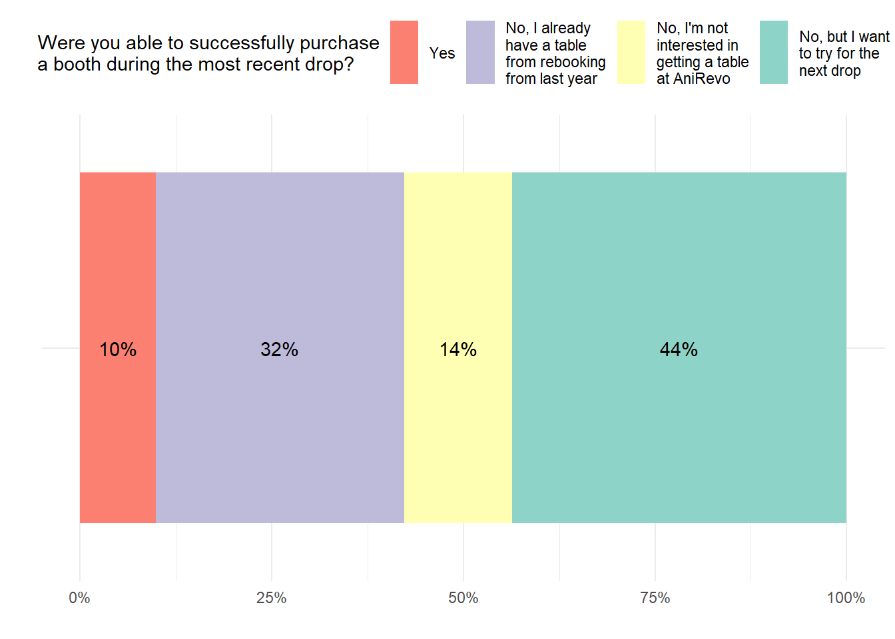
Opinions on the Current Artist Alley Format at AniRevo
The vast majority of artists would like the current process to be changed.
Show Code
df |>bar_graph(`Do you think AniRevo should change their current FCFS model?`, "Pastel1")
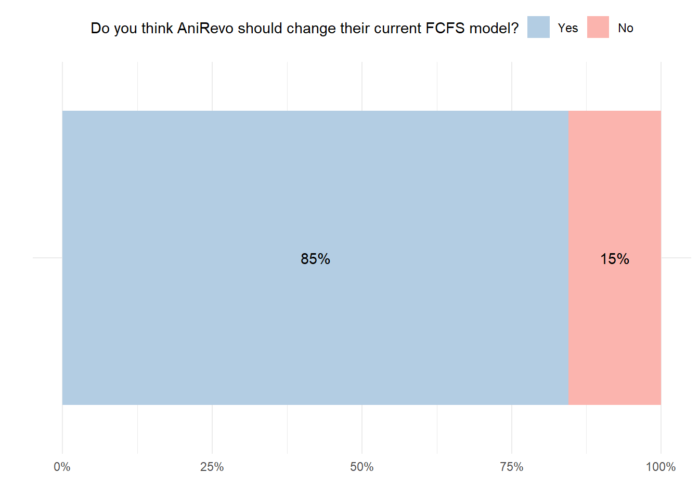
Importantly, artists, regardless of whether they secured a table for 2025 think the current FCFS model should be changed
Show Code
df |>grouped_bar_braph(`Do you think AniRevo should change their current FCFS model?`, table_2025, "Pastel1")
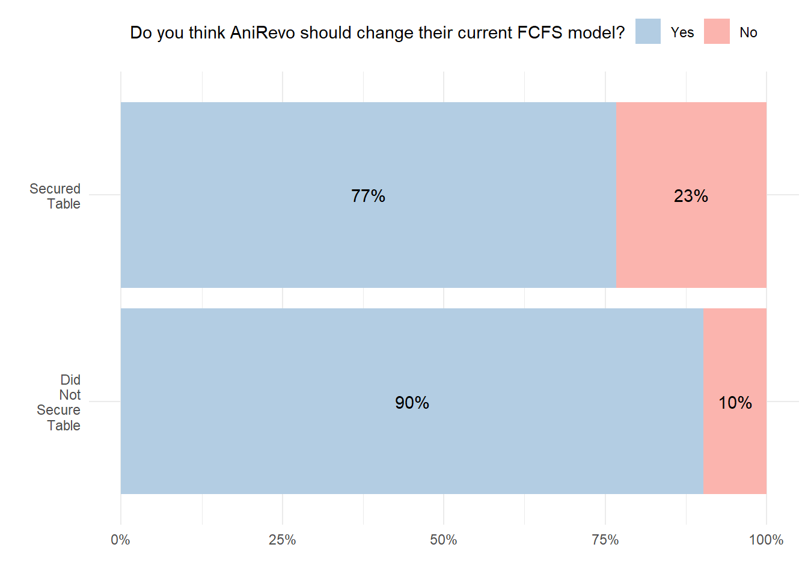
Most respondents expressed a desire to rebook their table if given the opportunity
Show Code
df |>bar_graph(`Do you think AniRevo should offer table rebooking for potential returning artists?`, "Pastel1") +labs(fill ="Do you think AniRevo should offer table rebooking\nfor potential returning artists?")
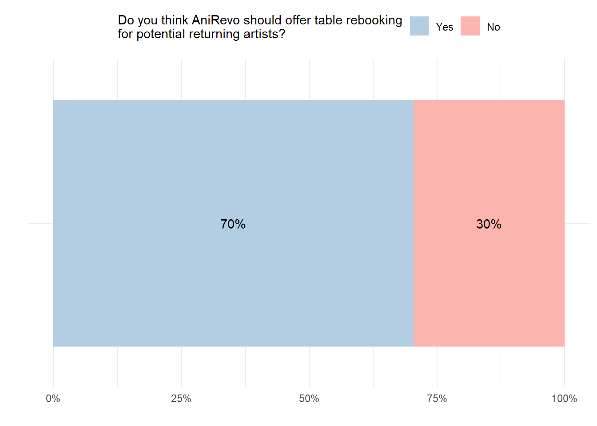
However, there is a much bigger discrepancy between artists who did manage to secure a table versus those who do not.
Based on artists’ responses in the comment section, there is a clear desire for stability and security. This may also be a symptom reflecting the uncertainty that comes with a FCFS model: if artists do manage to secure a table, given how difficult it would be to return if they were to give it up, they would be even more likely to want an opportunity to rebook a table for next year.
Show Code
df |>grouped_bar_braph(`Do you think AniRevo should offer table rebooking for potential returning artists?`, table_2025, "Pastel1") +labs(fill ="Do you think AniRevo should offer table rebooking\nfor potential returning artists?")
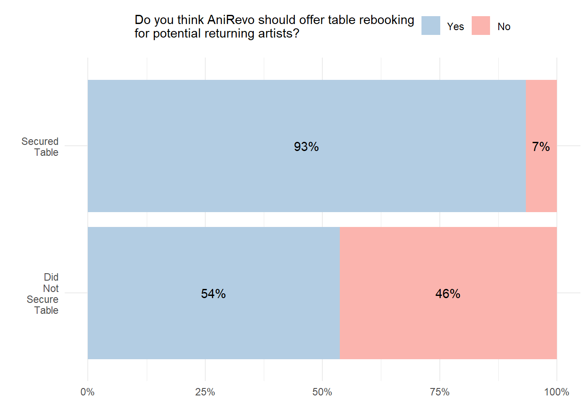
What new format would artists want to see at AniRevo?
Note 1: For this question, responses that do not add up to 1 (N = 6) are removed.
Note 2: These numbers do not add up to 1, as they reflect mean values.
Based on respondents, artists would prefer application selection based primarily on jury and lottery selection.
Show Code
format <- df |>select(contains("FOR THIS QUESTION"), table_2025) |>rowwise() |>mutate(row_sum =sum(across(1:3))) |>filter(row_sum <=1) |>pivot_longer(1:3) |>mutate(name =gsub(".*\\[(.*?)\\].*", "\\1", name)) format |>ggplot(aes(y = name, x = value, fill = name)) +geom_bar(position =position_dodge(width =0.8), stat ="summary") +scale_x_continuous(labels = scales::percent_format(decimal.mark =",", accuracy =1)) +stat_summary(fun = mean, colour ="black", position =position_dodge(width =0.8),geom ="text", hjust =1.7, aes(label =paste0(round(..x..*100, digits =1), "%"), group = name)) +scale_fill_brewer(palette ="Set3", labels =function(x) str_wrap(x, width =15),guide =guide_legend(reverse =TRUE)) +theme_minimal() +theme(legend.position="none" ) +labs(x ="", y ="", fill ="Format") +coord_cartesian(xlim =c(0, 0.5))
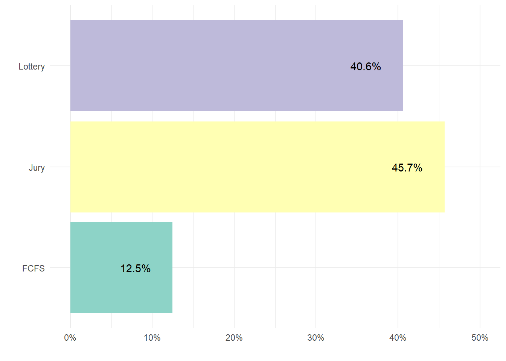
Now, breaking this down by whether respondents managed to secure a table at AniRevo 2025, we see that the pattern is largely the same.
Show Code
format |>ggplot(aes(y = name, x = value, fill = table_2025)) +geom_bar(position =position_dodge(width =0.9), stat ="summary") +scale_x_continuous(labels = scales::percent_format(decimal.mark =",", accuracy =1)) +stat_summary(fun = mean, colour ="black", position =position_dodge(width =0.9),geom ="text", hjust =1.2, aes(label =paste0(round(..x..*100, digits =1), "%"), group = table_2025)) +scale_fill_brewer(palette ="Set2", labels =function(x) str_wrap(x, width =15),guide =guide_legend(reverse =TRUE)) +theme_minimal() +theme(legend.position="top" ) +labs(x ="", y ="", fill ="2025 Table Status") +coord_cartesian(xlim =c(0, 0.5))
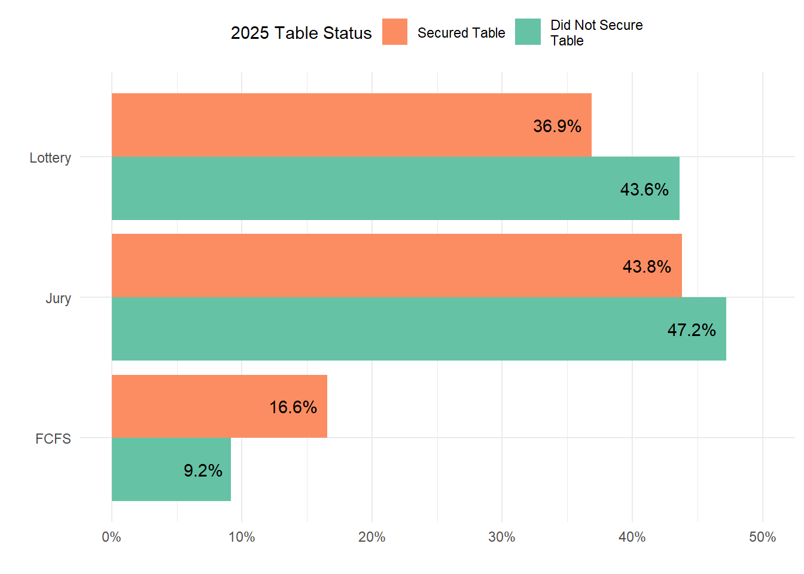
Rebooking Tables for Future Cons
On average, respondents believe that only about 50% of all available table space should be allocated towards future rebooking.
Show Code
df |>select(contains("what percentage of available table space should be available to be rebooked"), table_2025) |>rename(rebook_perc =1) |>ggplot(aes(y ="", x = rebook_perc)) +geom_bar(position =position_dodge(width =0.9), stat ="summary", fill ="thistle3") +scale_x_continuous(breaks =seq(0, 1, 0.1), labels = scales::percent_format(decimal.mark =",", accuracy =1)) +stat_summary(fun = mean, colour ="black", position =position_dodge(width =0.9),geom ="text", hjust =1.2, aes(label =paste0(round(..x..*100, digits =1), "%"))) +theme_minimal() +theme(legend.position="top" ) +labs(x ="", y ="") +ggtitle("What percentage of available table space should be available for rebooking?") +coord_cartesian(xlim =c(0, 0.7))
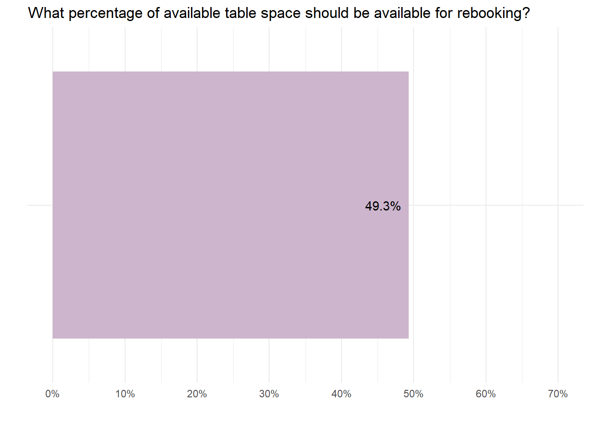
Even when this number is calculated separate for those who obtained a table versus those who did not for 2025, we can see that the value is well below ceiling (i.e., 100%).
Show Code
df |>select(contains("what percentage of available table space should be available to be rebooked"), table_2025) |>rename(rebook_perc =1) |>ggplot(aes(y ="", x = rebook_perc, fill = table_2025)) +geom_bar(position =position_dodge(width =0.9), stat ="summary") +scale_x_continuous(breaks =seq(0, 1, 0.1), labels = scales::percent_format(decimal.mark =",", accuracy =1)) +stat_summary(fun = mean, colour ="black", position =position_dodge(width =0.9),geom ="text", hjust =1.2, aes(label =paste0(round(..x..*100, digits =1), "%"), group = table_2025)) +scale_fill_brewer(palette ="Pastel1", labels =function(x) str_wrap(x, width =15),guide =guide_legend(reverse =TRUE)) +theme_minimal() +theme(legend.position="top" ) +labs(x ="", y ="", fill ="2025 Table Status") +ggtitle("What percentage of available table space should be available for rebooking?") +coord_cartesian(xlim =c(0, 0.7))
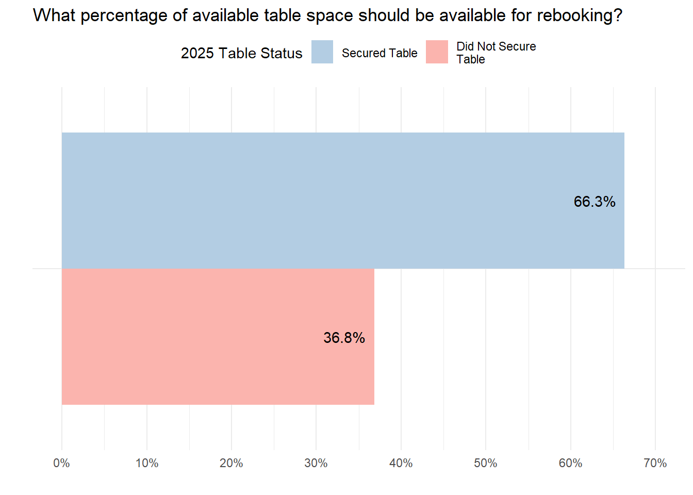
What about putting a limit on how many years individuals can rebook?
Show Code
df |>rename(rebook_years =`If AniRevo were to continue offing returning artists the opportunity to rebook, how many years should that artist be able to rebook, without reapplying to the event again?`) |>bar_graph(rebook_years, "Set3") +labs(fill ="How many years should artists\nbe able to rebook their table?")
Table rebooking is currently the only way for local artists to make sure they have at least one convention to attend every year in Vancouver. Vancouver is a small city with not a lot on anime related conventions. As most local cons are lottery based, there is a high chance local artists don't get to attend any con for a whole year. And juried system may filter out growing artists who are not as professional. Also not all artists are able to afford travelling for out of town conventions. If we have a lot of con and tables available like in Japan then I would definitely vote for 100% lottery based, but we don't.
I selected 100% and indefinitely in the previous two questions because I didn't understand how the other choices could be implemented fairly. While rebooking is far from being the best system, I still prefer it over complete lottery (e.g. Anime North) as the latter offers no long-term predictability to any business whatsoever. In my opinion, Otafest's artist alley is run extremely well and it uses a 60% jury and 40% lottery system. The application process for artists is stress-free, and the quality of art in the artist alley is always very high and a joy to look at. I understand that with the recent surge in the number of artists interested in tabling, a jury process would be laborious, and while this may be an unpopular opinion, I think increasing table prices is the most practical way of dealing with this issue. It'll help limit the pool of applicants to those who are serious about tabling and are confident enough that their products appeal to Anirevo's attendees, hopefully to a point where a jury system can be implemented without overworking the staffs. I also recommend keeping an eye on AX this year and see how their artist alley changes in comparison to previous years, because they just decided to adopt a lottery system. Some artists I follow on social media are vocally unhappy about the change, but I assume those who agree with it don't have the incentive to speak up. It would be nice to see how that affects the actual event itself this year to get a better picture.
Maybe rebooking should also be a lottery
The ideal would be to move to a 100% Jury Model, to ensure quality and variety. Save that, having a model that is primarily Lottery, or swapping to limiting the length of time before an artist has to reenter the lottery with allowing rebooking would be incredibly beneficial. Save booking more space in the Convention Center, this would be the best route forward to ensure a degree of fairness with allowing new artists to vend at AR
ive been trying to apply for the past 5 or 6 years and have never ever gotten in. it is very frustrating and after 3rd year applying i gave up even going to the convention entirely, because it was always mostly the same artists in the AA every year.
i always apply for just the one day lottery, the best and easiest deal for me
With the complications associated with AI and fake/scam "artists," an emphasis on vetting each artist/exhibitor should be the prime focus moving forward. Unless applicants are screened after the fact, FCFS does very little to guarantee quality options for artist alley. Lotto without review poses the same issue. ~5 years maximum for a mandatory re-application would be sensible to ensure regular artists are continuing to update their merchandise offerings and portfolios (though, most serious artists keep their work updated through the year), however, this is more work on the organizer's part and you would need a better committed and organized team just for artist alley coordination. Personally, I enjoy the re-booking process (the new online re-booking was wonderful), but I do see it as unfair if a single table of two (or three) artists splits to claim two or three separate tables (considering maybe only one artist actually applied/was approved originally). I do believe the new re-booking system eliminated this issue for the most part (progress there!).
I was upset to have gotten a table, only to find it out it was a clerical error. I do not agree with the rebooking system, because Anirevo should be the best reflection of our dynamically evolving artistic scene, which changes dramatically from year to year. Having the same artists makes Anirevo's artist alley a somewhat inaccurate reflection of our community. Finally, I was surprised to see that to buy an artist alley table, an artist only needs to have enough money to pay. There was no form to fill where we submitted our business name, submitted our products for evaluation, etc. This seems very exploitable. Finally, the FCFS model is easily exploitable by bad actors who can use multiple accounts or even bots to rig the drop in their favour. I want to see anirevo succeed, and I would love nothing more than to booth there. Anirevo changed my life for the better and showed me that there was a place for Canadian otaku like me. However, I do not agree with this current system on any level.
I'm a professional artist, however tabling at AR has never been on my radar because of the booking system. At this point in my career, I'm not interested in wasting my time with FCFS booking. I do participate in other large cons that are juried.
Those who share a table with somebody else who purchased a standard table should not be allowed to rebook into a full table or should not be allowed to rebook at all because they did not obtain the table. It was their table mate who actually obtained the table. The artists who obtained the table under their name and account should be allowed to rebook into the same type of table for the following year, preferably guaranteed as it’s true that this will help artists new and old to grow their business. This proposed change is also more fair to both returning artists who want to rebook and new artists who need to go through jury, lottery, or whatever system again. I think it’s a good thing that you allow existing artists to rebook their tables guaranteed and I understand that Anime Revolution is for profit, so this is a win-win situation. I don’t think that should change for the most part. But making that process fairer by not counting the ones who didn’t truly obtain a table for rebookings should open up more tables for new artists hoping to get in.
Alternatively, having a juried system would be the most fair. As long as artist names and social media profiles are blind juried so that prevents too much bias based on factors outside of skill/portfolio. This way, You can also get rid of AI resellers who are usually boycotted and give a bad reputation to the event. I would prefer a fully juried system if that is what it takes to elevate the event to the next level, bring better guests and panels, and thus make Anime Revolution a higher profile event with more attendees, a bigger organizing team, and higher profit for all involved because more foot traffic without overflowing artist alley will result in happier artists too.
I’ve been attending anirevo since its first year and hope to see this become Vancouver’s equivalent in scope and size to something like Anime Expo one day. We desperately need something like that in this city and country.
The concept of rebooking makes it extremely difficult for any new artists to join the community or even get an opportunity to booth. Most conventions worldwide do fresh applications every year for the sake of fairness
Can they please listen to artists' opinions instead of looking at what's profitable for themselves only.
I've seen other conventions offer spots for newer artists (i.e. Ai-kon in Winnipeg's New Artist Program) who haven't had opportunities to vendor at events and I think having that kind of option available would be great for those want the experience without competing for the table drops (especially when it's so competitive to gain a table).
i attended anirevo for the first time in 2023, and vended as an artist for the first time in 2024; from an attendee perspective i think that it gets repetitive seeing the same artists again and again, but as an artist i would be disappointed not being able to rebook after just one year, especially with how difficult it was to get a table. i think that having a limit as to how many years you can rebook could resolve this issue, and leaving the leftover tables to a lotto/jury system rather than fcfs
Time for a change.
Please for the love of god and anime no more FCFS bloodbath
rebooks should be put into a lottery with a 70% acceptance rate.
I didn’t add the previous numbers to 100 because it completely ignored rebook. Having a definite percentage in this case doesn’t really work.
Person who said previous rebook artists would be annoyed or angry if the rebook system was removed is correct.
The Vancouver convention centre is also expensive, so having the guaranteed money from rebooks likely helps.
Some conventions (Ai-Kon, Minicomi) do a small amount of juried tables exclusively for new artists. Or just do lotto for the remaining tables .
Only allow artists to rebook for the EXACT type of table they already have. Only one rebook per account, and non transferable. Allow everyone with a table the chance to rebook. Do NOT cut it off. We remember having to line up at 7am or earlier to get the chance to rebook. I think these were fixed for last year already? We like doing it online, so that’s a welcome change!
Offer half tables? Many people wanting to get into AR are newer or smaller artists, and offering a half table for them would get more people in the con. Can even charge a little more than half per full table, so it could be profitable.
Most of us don’t want AA expanded because it would cut into profits, but if it’s between getting rid of rebook and adding 10-20 more tables, I choose the extra tables.
The price increase, especially for attendants, is hurting everybody. I have friends who have stopped coming to AniRevo, cause $70 for one day is too much, when compared to what AniRevo has to offer. They have turned to smaller events instead
There are always going to be people who are unsatisfied with change, even if it's for the greater good of the community. Rebooking is not inherently bad, but the years you can rebook should be limited (1-3).
I am currently in the rebook cycle but if it means a healthier artist alley and a chance for my artist peers to attend AniRevo, I would 100% be for a new lottery/jury system and to scrap the current rebook process.
Having a seperate lottery for rebooking would be good. And they could still reapply for a general lottery pool too. It would also be cool if artists stayed in the rebooking pool for a set number of years but that's potentially a difficult system to track. I think AR can just tank the criticisms from veteran artists. Other cons have made hard shifts to lottery before. I think having more varied vendors also makes it more attractive for attendees. My friends have spent less and less time in the artist alley since so many of the tables are repeats.
I just want to elaborate on my answer above ("indefinitely"); if only a % of total tables are rebooks, I think a rotation model could be a possible solution. So e.g. the max cap # of rebooks are split between the next 2-3 years. Example: Theres 60 total rebook tables allocated for each con. The 60 people rebooking during the current con can choose 1 of the next 3 years, with a cap of 20 per year. The remaining tables are filled up by people from the previous 2 years, the rotation continues. Something like that? idk if that makes sense kajf
I do think the rebooking system is nice because I love knowing certain artists will be back, and I think it does show support for the artists who have been with anirevo for a long time.